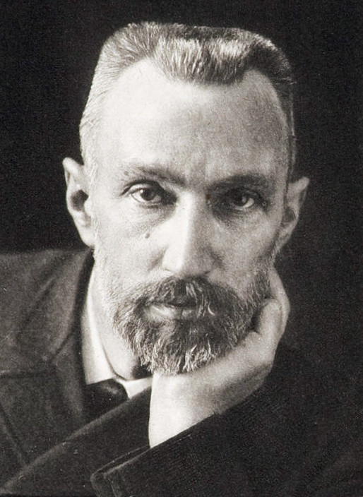
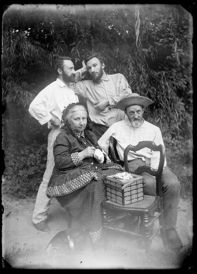

Marie đã gạt bỏ tình yêu và hôn nhân trong chương trình cuộc sống.
Điều này chẳng có gì độc đáo cho lắm, một người con gái nghèo bị thất vọng và tủi nhục trong mối tình đầu thề không bao giờ yêu nữa, nhất là một nữ sinh viên Xla-vơ hoài bão trí thức, muốn đi theo sứ mệnh của mình, dễ dàng cương quyết từ bỏ những cái gì thường làm cho bạn gái cùng cảnh ngộ bị ràng buộc, họ có hạnh phúc, song cũng có đau thương. Thời nào cũng vậy, những chị em phụ nữ tha thiết muốn trở thành họa sĩ, nhạc sĩ giỏi đều phải hy sinh tình yêu, sự sinh nở, những chức năng thường tình của con người.

.Marie đã tạo cho mình một thế giới riêng do lòng yêu khoa học trị vì. Ở đây, cũng có chỗ cho tình thương gia đình và tình nghĩa gắn bó với Tổ quốc còn đang bị áp bức. Ngoài ra, không còn gì nữa đối với cô gái hai mươi sáu tuổi sống độc thân một mình ở Paris, hàng ngày chỉ biết có trường đại học Xooc-bon (Sorbonne) và phòng thí nghiệm.
Bị những ước mơ ám ảnh, cảnh nghèo thúc bách, lại túi bụi quanh năm ngày tháng với một công việc quá căng thẳng, Marie không hề biết đến nhàn rỗi và tác hại của nó. Lòng tự hào, tính e lệ và cả sự hoài nghi đã ngăn cản tình yêu đến với cô. Từ ngày bị gia đình Z. chê nghèo không muốn cô về làm dâu, cô đinh ninh rằng phận con gái không của hồi môn khó mà tìm thấy được ở đàn ông sự tận tình hoặc lòng yêu quý. Quan niệm cứng rắn ấy, ý nghĩa đắng cay ấy càng làm cô khăng khăng muốn sống tự do, đơn độc.
Đúng thế, chẳng lấy gì làm lạ rằng một cô gái Ba Lan có thiên tài, bị một cuộc đời khắc khổ đẩy vào cảnh cô quạnh, đã tự giữ mình cho một sự nghiệp lớn. Nhưng thật lạ lùng, kỳ diệu là một nhà bác học thiên tài, một người Pháp, đã giữ cho mình cô gái Ba Lan ấy, chờ đợi cô mà không hề hẹn ước. Chính vào thời mà Marie còn ở phố Nô-vô-lip-xki, đang mơ ước đến học ở Sorbonne thì Pierre cũng từ đại học đường Sorbonne đó, nơi mà anh đã có bao nhiêu khám phá quan trọng về Vật lý, một hôm ra về, đã viết trong nhật ký những dòng chữ:
“Hơn nam giới, người phụ nữ yêu cuộc sống để mà sống. Những phụ nữ có thiên tài rất hiếm, cho nên khi chúng ta bị một tình yêu nào đó thôi thúc, muốn đi theo con đường không tự nhiên, khi chúng ta để cả tâm trí vào một sự nghiệp nó khiến chúng ta xa rời xã hội chung quanh thì ta phải đấu tranh với đàn bà. Người mẹ đòi hỏi trước hết tình yêu của đứa con, dù có thể vì vậy mà nó bị ngớ ngẩn đi chăng nữa. Cô nhân tình cũng muốn chiếm hoàn toàn người yêu và cho rằng ở một giờ ái ân và có phải hy sinh cái thiên tài cao đẹp nhất trên đời thì cũng rất tự nhiên mà thôi. Cuộc chiến đấu hầu như luôn luôn không bình đẳng, vì ở đây, chính nghĩa thuộc về đàn bà, họ nhân danh sự sống và tạo hóa để mà ra sức lôi kéo ta”.
Ngày tháng thoi đưa, Pierre Curie chỉ biết miệt mài nghiên cứu khoa học, không hề để ý đến một cô gái nào, dù tẻ nhạt hay xinh tươi mà anh có dịp gặp. Đã 35 tuổi, nhưng anh chưa yêu ai.
Và mỗi lần tình cờ giở lại cuốn nhật ký bỏ dở từ lâu, anh đọc lại những câu mình viết năm nào, tới nay nét mực đã phai mờ, anh đăm chiêu dừng lại trước những dòng chữ đầy luyến tiếc và khát vọng:
“Những phụ nữ có thiên tài rất hiếm”
“Khi tôi bước vào, Pierre Curie đang đứng bên cửa sổ. Trông anh rất trẻ, tuy anh đã 35 tuổi. Tôi ngạc nhiên nhìn cặp mắt trong sáng, vóc người cao lớn, bên ngoài ít chau chuốt của anh. Lời nói chậm rãi đầy suy nghĩ, vẻ giản dị, nụ cười nghiêm trang trẻ trung làm tôi tin tưởng. Chúng tôi trò chuyện với nhau chỉ một chút đã thân mật. Câu chuyện xoay quanh vấn đề khoa học mà tôi rất sung sướng được hỏi ý kiến anh”.
Buổi gặp gỡ ban đầu với Pierre được Marie kể lại với lời lẽ giản dị, ngượng ngùng. Đó là đầu năm 1894.
Một giáo sư vật lý người Ba Lan, ông Kô-van-xki, dạy ở trường đại học Phơ-ri-bua, đến nước Pháp một thời gian với vợ mà Marie quen biết từ dạo còn ở Schuc-ki. Đang tuần trăng mật, đôi vợ chồng mới cưới này đi du lịch, đồng thời kết hợp cùng chuyến đi để trao đổi về khoa học. Giáo sư Kô-van-xki có nhiều cuộc thuyết trình ở Paris và dự các buổi họp của Hội Vật lý. Vừa mới đến, ông đã hỏi thăm Marie về tình hình học tập, nghiên cứu và được biết nỗi băn khoăn của cô lúc này. Hội khuyến khích kỹ nghệ quốc gia đặt cho cô nghiên cứu về từ tính của các loại thép. Marie đã bắt đầu tìm tòi ở phòng thí nghiệm của giáo sư Lip-man. Việc phân tích các quặng, phân loại các mẫu kim khí đòi hỏi sắp đặt dụng cụ cồng kềnh, quá cồng kềnh với một phòng thí nghiệm đã chật chội. Marie phân vân, khó nghĩ.
- Tôi quen một nhà khoa học có giá trị làm việc ở trường Vật lý Hóa học – Đô-dếp Kô-van-xki nói sau mấy phút suy nghĩ - có thể anh ấy còn một phòng chưa sử dụng. Dù sao anh ấy sẽ góp ý với cô. Chiều mai, sau bữa ăn, cô lại chơi, uống trà. Tôi sẽ mời anh ta đến. Có lẽ cô biết tên anh ấy: Pierre Curie.
Buổi chiều êm ả ấy, trong một căn phòng của ngôi nhà tĩnh mịch là nơi vợ chồng Kô-van-xki ở trọ, một mối cảm tình đột ngột nẩy nở giữa nhà vật lý Pháp và nhà vật lý Ba Lan.
Pierre Curie rất duyên dáng, vừa nghiêm trang vừa nồng hậu. Anh cao lớn. Quần áo may rộng theo lối hơi cổ, hơi lùng thùng rất hợp với dáng người. Pierre có một vẻ lịch sự rất tự nhiên mà chính anh cũng không ngờ. Đôi bàn tay dài, nhạy cảm, khuôn mặt đều đặn, điềm đạm, có bộ râu hơi cứng kéo dài thêm, trông càng đẹp với đôi mắt thanh thản có cái nhìn tuyệt vời, thăm thẳm êm đềm như quên hết mọi việc trên đời.
Tuy Pierre luôn ý tứ, nói năng ôn tồn, người ta vẫn thấy ở anh vẻ thông minh và phong cách thanh tao hiếm có. Trong cái xã hội mà sự hơn hẳn về trí thức không phải bao giờ cũng đi đôi với phẩm chất cao đẹp, Pierre là một mẫu người hầu như có một không hai: trí tuệ tuyệt vời, tâm hồn lại cao thượng.
Ngay từ phút đầu tiên, cô gái Ba Lan ít nói này khiến Pierre cảm thấy như bị thu hút và bắt buộc phải chú ý. Cô Xkhua-đốp-xka (Skłodowska)đó quả là một người khá kỳ lạ. Thế ra cô là người Ba Lan từ Vác-xô-vi (Varsovie) đến đây để theo học ở Sarbonne? Năm vừa rồi đỗ nhất cử nhân vật lý à? Năm nay, mấy tháng nữa lại thi cử nhân toán? Và cái nếp nhăn lo nghĩ kia, giữa đôi mắt màu tro là do đang nghiên cứu từ tính các chất thép mà không biết đặt dụng cụ vào đâu.
Câu chuyện thoạt đầu còn chung chung, chuyển dần thành một hội thoại khoa học giữa hai người. Marie rất trân trọng đặt nhiều câu hỏi và lắng nghe những gợi ý của Pierre. Còn Pierre thì kể những dự kiến của mình, mô tả những hiện tượng tinh thể học mà anh thấy rất lạ và đang tìm quy luật của nó.
Thú vị thật! Pierre nghĩ thầm. Cô bạn trẻ xinh đẹp này chẳng những hiểu công việc ta thích, qua tiếng nói chuyên môn và công thức phức tạp, mà lại còn có thể bàn luận về nhiều chi tiết với một sự sáng suốt kỳ lạ! Quả là êm dịu biết bao!
Anh nhìn mái tóc Marie, vầng trán rộng, đôi bàn tay sứt sẹo nhiều chỗ vì cốc a-xit ở phòng thí nghiệm và những công việc nội trợ. Cô không trang điểm nhưng vẻ duyên dáng tự nhiên càng khiến lòng anh bàng hoàng. Bất giác, Pierre nhớ lại những điều ông Kô-van-xki cho anh biết về Marie, cô đã làm việc nhiều năm trước khi đến Paris học, cô nghèo, sống cô đơn trong một buồng gác xép sát nóc. Anh hỏi bâng quơ, không biết để làm gì:
- Cô định ở Pháp mãi chứ?
Gương mặt Marie thoáng một nét buồn. Cô trả lời, giọng như hát:
- Không! Hè này, nếu đỗ cử nhân, tôi sẽ về Varsovie. Sang thu, tôi cũng muốn quay lại đây, nhưng chả biết có được không. Nay mai, tôi sẽ đi dạy ở Ba Lan và tìm cách giúp ích cho nước tôi. Những người Ba Lan không có quyền bỏ nước mình.
Đương nhiên, câu chuyện có cả vợ chồng giáo sư Kô-van-xki tham gia, hướng về đất nước Ba Lan đang bị o ép, nghẹt thở dưới ách áp bức của chế độ Sa Hoàng. Ba con người phải sống xa tổ quốc hồi tưởng lại những kỷ niệm của quê hương thân yêu, trao đổi thông tin về tin tức họ hàng, bè bạn. Pierre nghe Marie nói đến nhiệm vụ yêu nước thì rất đỗi ngạc nhiên. Là một nhà khoa học chỉ miệt mài với vật lý, anh không ngờ được rằng người con gái rất có khiếu kia lại có thể nghĩ đến những chuyện không phải là khoa học và ôm ấp một ý định sẽ đem hết sức mình đấu tranh chống lại ách thống trị của Sa hoàng…
Anh muốn gặp lại Marie.
Pierre Curie là ai?
Một nhà bác học Pháp thiên tài, trong nước chưa ai biết tên nhưng đã được đồng nghiệp nước ngoài đánh giá rất cao.
Anh sinh ngày 15 tháng 3 năm 1859 ở Paris phố Qui-vi-ê (Cuvier), là con trai thứ hai bác sĩ Ô-giên Qui-ri (Eugène Curie ) cũng là con một thầy thuốc. Dòng họ Curie gốc ở An-đát-xơ (alsace)và theo đạo tin lành, xưa kia thuộc tầng lớp trung lưu, kế tiếp mấy đời trở thành một gia đình trí thức, một gia đình bác học. Ngoài công việc thầy thuốc chữa bệnh để kiếm sống, bác sỹ Curie rất ham mê nghiên cứu khoa học. Ông làm trợ lý ở phòng thí nghiệm viện bảo tàng và là tác giả của nhiều công trình tiêm chủng bệnh lao.

.Từ bé, hai anh em Giắc và Pi-e (Jacque, Pierre) cũng ham thích khoa học. Pierre tính tự do và thích mơ mộng, không chịu gò ép vào khuôn khổ giảng dạy cho các trường trung học. Bác sỹ Curie biết rằng đứa con trai quá đặc biệt này không thể là một học trò xuất sắc ở trường trung học nên lúc đầu, ông tự mình dạy con, về sau giao phó cho một giáo sư nổi tiếng là Ba-li-dơ.
Nhờ cách dạy dỗ phóng khoáng đó, 16 tuổi Pierre đỗ tú tài khoa học, 18 tuổi đỗ cử nhân, 19 tuổi được vào làm trợ lý cho giáo sư Đơ-danh ở Đại học khoa học. Anh làm việc này 5 năm. Giắc (Jacque) cũng đỗ cử nhân và làm trợ lý ở Sorbonnr. Hai nhà vật lý trẻ cùng nghiên cứu tìm ra một hiện tượng quan trọng, hiện tượng áp điện và chế ra một dụng cụ mới gọi là áp điện kế có nhiều tác dụng, đo được chính xác những lượng điện rất nhỏ.
Năm 1883, Giắc(Jacque) được công bố làm giáo sư ở Mông-pơ-li-ê (Montpellier). Hai anh em rất tiếc phải xa nhau. Pierre trở thành trưởng phòng thí nghiệm vật lý và Hóa học Paris. Ngoài thì giờ hướng dẫn cho học sinh thực tập, anh đi sâu vào những vấn đề lý thuyết của vật lý tinh thể và khám phá ra nguyên lý đối xứng là một trong những nền tảng của khoa học hiện đại.
Sau quá trình nghiên cứu và thí nghiệm, Pierre sáng chế ra một cái cân rất nhạy gọi là cân Curie và tìm ra một định luật từ tính: định luật Qui-ri (Curie).
Do những công trình đó và do kết quả hướng dẫn ba mươi học sinh của trường, đến năm 1894, lương anh ba trăm quan một tháng, bằng lương một thợ chuyên môn trong nhà máy.
Khi nhà bác học nổi tiếng người Anh, công tước Ken-via tới Paris, ông không chỉ đến hội vật lý nghe những thông báo của Paris, ông còn biên thư cho nhà vật lý trẻ, tỏ lòng thán phục công trình của Pierre và muốn được gặp.
Sau đó có nhiều buổi tiếp xúc giữa hai người, bàn luận hàng giờ về những vấn đề khoa học. Nhà bác học Ken-via rất đỗi ngạc nhiên khi được biết Pierre Curie làm việc không có người cộng tác, trong một gian phòng tiều tụy, và bỏ rất nhiều thì giờ vào những công việc không đâu và ở Paris không ai biết đến tên một nhà vật lý mà bản thân ông liệt vào bậc thầy.
Pierre Curie lại còn hơn cả một nhà vật lý đặc sắc.
Khi bạn bè giục anh xin một chức vụ có thể nâng mức sống vật chất cho mình, Pierre đã nói:
- Người ta bảo có một giáo sư muốn thôi việc và tôi nên xin vào chỗ đó. Làm cái trò đi xin xỏ địa vị thật không gì chán bằng và tôi không quen cái trò này. Tôi cho không gì hại trí óc bằng những việc đại loại như thế.
Trả lời ông hiệu trưởng trường vật lý muốn đề nghị tặng huân chương cho anh, Pierre từ chối như sau:
“Kính thưa ông hiệu trưởng.
Tôi được ông Muy-đê cho biết ông định giới thiệu tôi một lần nữa với ông thị trưởng về vấn đề huân chương.
Xin ông đừng làm việc đó. Bằng không tôi buộc lòng phải từ chối vì tôi đã quyết không bao giờ nhận huân chương gì. Mong ông tránh cho tôi trở thành hài hước trước mặt mọi người.
Còn như nếu ông muốn chiếu cố đến tôi thì ông đã làm rồi, một cách thiết thực khiến tôi rất cảm động: Đó là cho tôi phương tiện làm việc…”
Pierre Curie có tâm hồn một nhà văn, nhà thơ và đã từng ghi vào sổ tay của mình: “Phải biến cuộc sống thành một giấc mơ và biến giấc mơ thành sự thật”.
Giờ đây, nhà thơ và nhà vật lý đang bị tài đức của một cô gái Ba Lan chinh phục: kiên trì và dịu dàng, Pierre tìm cách đến gần con người huyền diệu ấy. Anh gặp lại cô một đôi lần trong những buổi họp ở Hội vật lý, Marie tới đây nghe các báo cáo về những phát minh khoa học mới. Anh gửi tặng cô một bản “in giấy đặc biệt” công trình nghiên cứu mới nhất của anh: Về tính đối xứng trong những hiện tượng vật lý. Đối xứng giữa một điện trường và từ trường. Trang đầu có ghi: “Tặng cô Xkhua-đốp-xka (Skłodowska) với sự kính trọng và tình bạn của tác giả, Pierre Curie ”. Anh thoáng trông thấy Marie ở phòng thí nghiệm của giáo sư Lip-man trong chiếc áo choàng vải thô, lặng lẽ, cặm cụi trước những dụng cụ nghiên cứu.
Pierre ngỏ ý muốn đến chơi, Marie cho anh địa chỉ. Thân ái, đoan trang, Marie tiếp anh trong phòng của mình. Tim Pierre se thắt lại trước bao thiếu thốn nghèo nàn, nhưng lại thưởng thức tự đáy lòng sự hòa hợp tinh tế giữa nhân vật và trang trí bên ngoài. Chưa bao giờ anh thấy Marie đẹp như lúc này trong cái gác xép gần như trống rỗng với chiếc áo đã cũ sờn, vẻ mặt thiết tha nghiêm nghị. Không thể tìm một cái khung đẹp hơn là cái gian sát nóc trần trụi ấy cho gương mặt trẻ trung mang dấu vết một cuộc sống kham khổ.
Mấy tháng trôi qua. Giữa Pierre và Marie, tình bạn ngày một mặn mà, tình thân càng thêm gắn bó, tăng lên cùng lòng khâm phục, quí trọng và tin yêu lẫn nhau. Pierre đã là tù nhân đáng mến của người con gái Ba lan rất đỗi thông minh sáng trí ấy. Anh nghe lời Marie, làm theo ý của cô. Nhờ có Marie thúc đẩy, khích lệ, dần dần Pierre khắc phục được tính lơ là, chậm chạp của mình. Anh đang thảo những công trình về từ tính và sẽ bảo vệ luận án tiến sĩ xuất sắc.
Marie cứ nghĩ mình còn tự do. Cô không có vẻ sẵn sàng muốn nghe những lời quyết định mà nhà vật lý chưa dám nói ra.
Chiều hôm ấy, một buổi chiều tháng sáu đẹp trời, họ lại gặp nhau, có lẽ là lần thứ mười, trong buồng nhỏ phố Phơ-ăng-tin.Trên bàn, bên cạnh những sách toán Marie đang dùng để chuẩn bị cho kỳ thi sắp tới, trong một cái cốc có cắm mấy bông cúc trắng mà Pierre và Marie đi chơi mang về. Cô gái đun nước trên cái đèn cồn thủy chung để pha trà.
Pierre vừa kể xong tỉ mỉ công trình mà anh đang suy nghĩ. Bất giác, anh nói:
- Tôi muốn cô được biết bố mẹ tôi. Tôi ở với các cụ ở một gian nhà nhỏ ở Xô (Sceaux). Hai thân là những người tuyệt vời.
Anh tả cho Marie nghe bố cô là một cụ già cao mảnh khảnh, đôi mắt xanh sắc sảo, rất thông minh, xốc nổi và nóng như lửa nhưng lại rất tốt; mẹ ốm yếu, bệnh tật, vẫn là một người nội trợ khéo, can đảm và vui vẻ. Anh hồi tưởng lại tuổi thiếu niên tinh nghịch của mình, những buổi tối đi chơi miết trong rừng cùng anh ruột là Giắc (Jacques).
Maiẻ không khỏi ngạc nhiên. Sao mà giống gia đình mình như thế nhỉ? Chỉ cần đổi một vài chi tiết, chuyển ngôi nhà ở Sceaux đến một phố ở Vác-xô-vi (Varsovie ) thì gia đình Curie sẽ trở thành gia đình Xkhua-đốp-xki. Nếu gác một bên mặt tín ngưỡng - bác sỹ Curie là một con người tự do tư tưởng và chống giáo trị, không cho các con chịu lễ rửa tội - thì hai nhà có nhiều chỗ giống nhau, cũng một môi trường khôn ngoan và trọng danh dự, cũng yêu quí văn hóa và khoa học, cũng đùm bọc thân thương giữa cha và con, cũng một lòng yêu thiên nhiên sâu sắc…
Tươi cười, thoải mái, Marie kể những ngày vui vẻ ở nông thôn Ba Lan, nơi quê nhà mà vài tuần nữa, cô sẽ về thăm.
- Nhưng đến tháng mười, cô trở lại chứ? Hãy hứa với tôi là cô sẽ quay lại đây. Ở Ba Lan, cô sẽ không thể nào tiếp tục học được. Bây giờ cô không có quyền rời bỏ khoa học.
Qua mấy câu chăm sóc thường tình này, Pierre đã để lộ một nỗi lo sâu sắc. Marie hiểu rằng khi anh nói “Cô không có quyền rời bỏ khoa học” ý anh định nói là “Cô không có quyền rời bỏ tôi!”
Cả hai cùng im lặng một lúc lâu. Rồi Marie ngước đôi mắt màu tro nhìn Pierre, trả lời giọng còn do dự:
- Anh nói phải. Tôi rất muốn trở lại đây.
Nhiều lần Pierre tỏ ý muốn lấy Marie làm vợ. Song những lần đó đều không được tốt đẹp như anh mong muốn. Lấy một người Pháp ư? Từ giã gia đình nhà mình, không phụng sự tổ quốc nữa, bỏ mặc nước Ba Lan ư? Tất cả những cái đó đối với Marie đều là phản bội ghê gớm. Cô không thể làm như thế! Cô đã thi đỗ xuất sắc, giờ đây cô phải trở về Varsovie, ít nhất là hè tới, và có lẽ sẽ về hẳn. Mặc cho Pierre thất vọng, Marie bước lên tầu không hứa hẹn gì, chỉ dành cho anh một tình bạn lúc này không làm anh thỏa mãn nữa.
Trong tâm trí, Pierre hướng vọng theo Marie. Anh muốn đến gặp cô ở Thụy Sĩ, cô ở đó vài tuần với cụ Xkhua-đốp-xki đã đến tận đây đón con gái. Hay là đi Ba Lan, cái nước Ba Lan mà anh ghen? Nhưng không thể được.
Ở xa, anh tiếp tục biện hộ cho ý định của mình. Trong mấy tháng hè ở Trét-ta, Lăm-be, Kra-kốp, Vác-xô-vi, đến đâu Marie cũng nhận được những lá thư nét chữ vụng về hơi trẻ con, gửi từ trường Vật lý và Hóa học, cố thuyết phục cô, kéo cô trở lại, nhắc nhở cô rằng Pierre Curie đang chờ đợi.
Pierre viết cho Marie 10 tháng 8 năm 1984:
“Có vui nào bằng vui được thư cô. Mong ngóng hai tháng trời bẵng tin làm tôi bần thần. Nói để cô biết rằng thư cô đến rất đúng lúc.
Tôi mong rằng cô sẽ chóng lại sức rồi trở về với chúng tôi vào tháng 10 và phần tôi, có lẽ chẳng đi đâu cả. Tôi ở thôn quê suốt ngày trước cửa sổ mở, hoặc trong vườn.
Chúng ta đã hứa hẹn với nhau một tình bạn rộng lớn (có phải không?). Miễn là cô không thay đổi ý kiến! Vì đây không phải là vấn đề hứa mà được! Làm sao có thể ra lệnh trong những chuyện này. Tuy nhiên, giá ta được sống bên nhau mỗi người theo đuổi say sưa một ước mơ: ước mơ yêu nước của cô, ước mơ nhân đạo và ước mơ khoa học của hai ta thì thật là một sự tốt đẹp mà tôi không dám nghĩ đến.
Về phương diện khoa học, đã có những công việc mà chúng ta dám làm, con đường này chắc chắn và mỗi phát minh dù nhỏ đến đâu cũng coi như là đã được.
Cô thấy đấy, mọi việc đều có liên quan… Chúng mình hứa hẹn với nhau sẽ là đôi bạn thân, nhưng nếu sang năm, cô rời bỏ nước Pháp thì tình bạn lý tưởng ấy giữa hai con người không bao giờ gặp nhau sẽ có tác dụng gì! Hay cô ở lại với tôi có hơn không? Tôi hiểu rằng chuyện này sẽ làm cô bực mình và tôi chả muốn nhắc đến nữa. Vả lại, tôi tự xét không xứng đáng với cô về mọi mặt.
Mới đầu tôi định xin phép gặp cô một cách ngẫu nhiên ở Phơ-ri-bua nhưng lại hiềm cô chỉ ở đây một ngày mà cái ngày ấy nhất định giành cho các bạn Kô-van-xki của chúng ta!
Người bạn tận tình của cô
Pierre Curie
Nếu cô biên thư cho tôi biết chắc chắn là thế nào tháng 10 này cô cũng sẽ trở lại Paris, tôi sẽ sung sướng vô cùng. Để thư đi nhanh, xin đề theo địa chỉ: Pierre Curie, 13 phố Xa-blông ở Xô (quận Xen)”
Lại viết cho Marie ngày 14 tháng 8 năm 1894:
“Tôi đã do dự cả một ngày và cuối cùng, không định đến tìm cô. Cảm nghĩ đầu tiên khi đọc thư cô là cô thích tôi không đến. Cảm nghĩ thứ hai là dù sao, cô cũng không ngăn cản tôi đến sống bên cô 3 ngày và tôi đã tính đi. Rồi tôi lại thấy hổ thẹn vì mình cứ đeo đuổi như vậy trong khi cô không thuận. Sau cùng, sở dĩ tôi ở lại là vì nghĩ rằng tôi đến sẽ làm cô không thích và cụ nhà mình mất thú vui đi chơi với cô.
Nay không còn kịp nữa thì tôi lại tiếc. Phải chăng ba ngày sống bên nhau có thể tăng gấp đôi tình bạn giữa chúng ta để rồi có đủ nghị lực không quên nhau trong hai tháng rưỡi xa cách.
Marie có theo thuyết định mệnh không? Cô còn nhớ ngày tuần chay chứ? Cô mất hút trong đám đông. Tôi có cảm giác là tình bạn của chúng ta rồi cũng sẽ gián đoạn đột ngột như vậy mà cả hai chúng mình đều không muốn. Tôi không có tư tưởng định mệnh, nhưng có lẽ đó sẽ là hậu quả tình bạn của chúng ta. Tôi sẽ không biết hành động đúng lúc.
Kể ra nếu thế thì cũng rất hay cho cô, vì tôi chẳng hiểu tại sao lại cứ muốn giữ cô ở lại Pháp, đày ải cô xa Tổ quốc, xa những người thân mà chẳng có gì tốt lành đền bù cho sự hy sinh ấy?
Cô hơi quá tự tin khi cứ tưởng rằng mình hoàn toàn tự do. Ít ra ta cũng làm nô lệ tình cảm của mình, nô lệ các định kiến của những người thân. Ta lại còn phải kiếm sống do đó, trở thành một bánh xe trong guồng máy…
Cái khó và cái khổ nhất là phải nhân nhượng các thành kiến của xã hội xung quanh. Nhiều hay ít, tùy theo chừng mực ta cảm thấy mình yếu hoặc khỏe đến đâu. Không nhân nhượng đủ mức thì bị nghiền nát. Nhân nhượng quá hóa hèn và mình thấy tởm với chính mình. Thế là tôi nay đã xa những nguyên tắc của tôi cách đây mười năm. Dạo đó, tôi cho rằng cần phải thái quá trong bất cứ việc gì và không được nhân nhượng chút nào cho môi trường quanh ta. Và nghĩ rằng ta cứ phải đi quá về cả mặt xấu cũng như mặt tốt của mình.
Sau hết, cô xem đây, tôi đã già đi nhiều và cảm thấy mình rất sút.
Chúc cô vui vẻ.
Người bạn tận tình của cô”.
Thư viết cho Marie ngày 7 tháng 9 năm 1894:
“Cô đoán đúng làm sao, lá thư của cô khiến tôi lo ngại vô ngần. Tôi khẩn khoản khuyên cô trở lại Paris vào tháng10 này. Cô mà không trở lại thì tôi sẽ rất buồn. Chẳng phải vì ích kỉ mà tôi nói thế. Tôi chỉ nghĩ rằng ở Paris, cô sẽ làm việc tốt hơn và có ích hơn.
Nếu một người cứ muốn húc đầu vào tường đá, hòng làm đổ tường thì cô nghĩ sao? Ý tưởng đấy có thể bắt nguồn từ một tình cảm tốt đẹp, nhưng thật ra lại rất buồn cười và dại dột. Tôi nghĩ rằng một số vấn đề đòi hỏi được giải quyết chung, song ngày nay không còn giải pháp cục bộ nữa, và khi ta đi vào một con đường không có lối thoát ta có thể gây nhiều tác hại. Tôi lại nghĩ rằng công lý không có thật ở trên đời này và ưu thế sẽ thuộc về chế độ nào mạnh hơn, nghĩa là kinh tế hơn. Một người làm việc đến kiệt sức mà vẫn sống khổ cực. Đó là một điều đáng căm giận, phẫn nộ, nhưng không vì vậy mà nó sẽ hết. Có lẽ rồi nó sẽ mất đi vì con người là một thứ máy và về phương diện kinh tế, cho chạy một cái máy nào đó theo chế độ bình thường của nó, có lợi hơn là làm nó quá sức.
Cô hiểu nghĩa ích kỷ một cách hơi lạ. Dạo mới tuổi hai mươi, tôi gặp một tai họa lớn: trong trường hợp khủng khiếp, tôi mất một bạn gái thời niên thiếu mà tôi rất yêu. Tôi không đủ can đảm để kể lại chuyện này. Qua nhiều ngày nhiều đêm, tôi cứ bị ám ảnh, cứ tự giày vò mình, rồi lại nguyện sống như một kẻ tu hành, tự nhủ là chỉ nghĩ đến sự vật, chứ không nghĩ đến bản thân hoặc người khác. Từ ấy tôi thường tự hỏi phải chăng mình muốn thoát li đời sống chỉ là một cách để lãng quên?
Bên nước cô có thể viết thư tự do không? Tôi ngờ lắm và từ nay ta không nên bàn luận tự do trong thư, tuy chỉ là chuyện triết học song có thể bị phán đoán sai và phiền đến cô.
Cô có thể biên thư cho tôi nếu muốn, địa chỉ 13 phố Xa-blông.
Người bạn tận tình của cô
Pierre Curie
Tôi đưa ảnh cô cho Jacques xem. Được chứ? Anh tôi bảo rất đẹp. Và nỏi thêm: vẻ mặt cương quyết lắm và bướng nữa”.
Tháng mười đây rồi. Trái tim Pierre như muốn vỡ ra vì vui sướng. Marie đã trở lại Paris. Ma-ri có mặt trong lớp ở Sorbonne, ở phòng thí nghiệm của giáo sư Líp-man. Năm nay, năm cuối cùng ở Pháp - cô nghĩ thế - Marie không ở khu La-tinh nữa. Brô-ni-a nhượng cho em gái một buồng liền vách với phòng khám bệnh của chị ở số 39 phố Sa-tô-doong. Brô-ni-a (Bronia) chỉ đến đây ban ngày vì hai anh chị đã về ở khu Vi-let (Vilette). Marie có thể làm việc yên tĩnh.
Chính trong chỗ ở thiếu ánh sáng và man mác buồn ấy, Pierre lại tha thiết nêu câu chuyện tâm tình của mình. Lòng anh cũng rạo rực một niềm tin, như người vợ tương lai của anh, một niềm tin còn tuyệt đối hơn nữa, không chút pha trộn. Với Pierre, khoa học là một mục đích cuối cùng. Đường đời của anh vì vậy mới lạ lùng làm sao, hầu như không thể tưởng tượng được, vì nó hòa lẫn ước mơ của trái tim với hoài bão của trí tuệ. Pierre hướng về Marie do tình yêu đồng thời còn do sự nghiệp khoa học.
Pierre lại sẵn sàng hi sinh cái mà người đời gọi là hạnh phúc, cho một hạnh phúc chỉ mình anh biết. Anh đề nghị với Marie một việc thoạt đầu nghe rất kỳ cục, một kế gạ gẫm, nhưng lại hoàn toàn đúng với bản chất của anh. Nếu Marie không yêu anh, liệu anh có cách thu xếp theo tình bạn được không? Nghĩa là sẽ cùng ở và làm việc trong một nhà ở phố Mup-phơ-ta, có cửa sổ trông ra vườn, có thể ngăn đôi thành hai gian riêng biệt.
Hoặc nếu như Pierre sang ở Ba Lan, liệu cô có lấy anh không? Thời gian đầu anh sẽ dạy tiếng Pháp, rồi dần dần cũng nghiên cứu khoa học với Marie, được đến đâu hay đến đấy.
Cô giáo ngày xưa mà một nhà giàu quê kệch ở nông thôn Ba Lan chê thì giờ đây, Pierre Curie, con người hiếm có ấy khẩn khoản, van nài.
Marie thổ lộ với Bronia nỗi niềm lo ngại của mình. Cô nói về ý định của Pierre muốn rời bỏ nước Pháp, sang Ba Lan. Cô thấy mình không có quyền nhận sự hy sinh ấy. Nhưng lòng rất đỗi xao xuyến.
Biết thêm rằng Marie đã nói đến mình với anh chị Du-xki (Kazimierz Dłuski), Pierre lại cố dần thêm một bước về phía này. Anh nhiều lần tìm đến Bronia, giành được sự đồng tình hoàn toàn của chị, rồi mời chị cùng đi với Marie đến gặp cha mẹ anh ở Xô (Sceaux). Bà bác sỹ Curie kéo Bronia ra một nơi và xúc động, khẩn khoản, bà nhờ chị thuyết phục cô em út.
Bà nói:
- Chị bảo em nó đừng chần chừ nữa. Không ai trên đời này như Pierre đâu. Lấy Pierre, cô bé sẽ sung sướng.
Phải mười tháng qua đi, cô gái Ba Lan khẳng khái ấy mới nhận lời. Nhưng từ lâu, Pierre đã hiểu Marie. Điều làm anh gắn bó và như bị thôi miên, đó là lòng tận tụy gần như hoàn toàn của Marie đối với công việc, là thiên tư mà anh linh đoán, đó cũng là lòng dũng cảm và tâm hồn cao thượng của cô.
Còn nguyên tắc ấy à? Từ lâu, Pierre cũng đã từng sống theo những nguyên tắc mà rồi chính cuộc sống lại giải thích cho anh thật là vô lý. Anh cũng đã từng dự định là không bao giờ lấy vợ và lập gia đình. Anh chẳng có một đất nước Ba Lan để bảo vệ như Marie, song anh vẫn đinh ninh rằng gia đình không thể dung hòa với một cuộc đời cống hiến cho khoa học. Kỷ niệm đau thương về một mối tình thắm thiết thời trai trẻ đã khiến lòng anh co lại, xa lánh đàn bà. Pierre không muốn yêu nữa. Nguyên tắc có ích đó đã tránh cho anh một cuộc hôn nhân tầm thường, đợi đến ngày gặp một người đặc biệt, một người “dành cho anh”, đó là Marie. Làm sao anh có thể bỏ qua cái may mắn được có một hạnh phúc lớn và một sự hợp tác tuyệt diệu? Pierre muốn có riêng bên mình người thiếu nữ, đồng thời là một cô gái Ba Lan và một nhà vật lý. Ba con người đó giờ đây không thể thiếu trong cuộc đời anh được. Đó là những điều Pierre dịu dàng dẫn giải cho cô bạn. Với lời lẽ đó, và nhiều lời khác âu yếm hơn, với sự săn sóc ân cần, nhất là sự có mặt hàng ngày, dần dần Pierre làm thay đổi tâm tính của Marie từ cô quạnh thành một con người thường tình.
Ngày 14 tháng 7 năm 1895, Dô-dếp (Józef Władysław Skłodowski), anh cả trong gia đình Xkhua-đốp-xki biên thư từ Vác-xô-vi cho Marie, báo cho cô biết sự đồng tình thân yêu của cả nhà:
“Nay em là vợ chưa cưới của Pierre Curie, trước hết anh chân thành chúc em tìm thấy hạnh phúc tươi vui bên cạnh chồng em. Em xứng đáng được hưởng hạnh phúc ấy. Đó là ý nghĩ của anh và những ai biết lòng tốt cùng tính nết của em.
Không có người nào công bằng lại có thể trách em đã đi theo tiếng gọi của trái tim. Biết em từ trước đến nay, anh tin chắc rằng em sẽ mãi mãi là một phụ nữ Ba Lan và trái tim em bao giờ cũng thuộc về gia đình ta. Anh và các chị cũng vậy, không bao giờ quên em.
Hôn em trăm lần, Mania yêu quý và một lần nữa, chúc em hạnh phúc, vui vẻ và thành công. Gửi đến chồng chưa cưới của em những lời chúc thân ái. Nói với chồng em rằng anh sung sướng nhận Pierre là một thành viên trong gia đình ta, dành cho Pierre tình bạn chân thành và lòng ngưỡng mộ của anh…”
Ngày 26 tháng 7 năm 1895, Marie trở dậy ở cái nhà phố Sa-tô-doong lần cuối cùng. Trời tuyệt đẹp. Mặt cô gái có một vẻ rạng rỡ mà bạn học của cô chưa hề biết đến. Hôm nay, cô Xkhua-đốp-xka trở thành Marie Curie.
Cô chải chuốt mái tóc đẹp của mình, mặc chiếc áo mới do bà mẹ anh rể Du-xki hiện nay ở phố Đức quốc tặng, Marie nói với cụ:
“Cháu chỉ có một cái áo vẫn mặc hàng ngày. Nếu bác có lòng muốn mừng cháu một cái áo mới, cháu thích nó mầu sẫm, thiết thực để sau này có thể mặc đi đến phòng thí nghiệm”.
Chị thợ may ở phố Đăng-cua do Brô-ni-a chỉ dẫn, đã cắt một chiếc áo len xanh nước biển và một chiếc áo kẻ dọc hai màu lơ và xanh nhạt. Marie mặc vào trông càng đẹp và trẻ.
Marie rất ưng cách tổ chức đám cưới này. Ngay trong từng chi tiết đưa dâu sẽ khác mọi đám cưới. Không có áo dài trắng, không có nhẫn vàng, cũng chẳng có tiệc cưới và lễ bên đạo. Pierre là người tự do tư tưởng và Marie, từ lâu, không còn đi nhà thờ nữa. Không cần quản lý văn khế vì hai người chẳng có tài sản gì ngoài hai chiếc xe đạp mới bóng loáng vừa sắm hôm trước với tiền mừng cưới của một người anh họ. Rồi đây, hè đến, hai vợ chồng sẽ thỏa sức đạp xe đi khắp thôn quê.
Đúng là một đám cưới giản dị, tốt đẹp, không hề vương vấn một chút gì gọi là hờ hững, tò mò hoặc ghen ghét. Ở tòa thị chính Sceaux và trong vườn nhà giai, phố Xa-blông (Salomé), chỉ có vợ chồng chị Brô-ni-a, vài bạn thân ở đại học, cùng cụ Xkhua-đốp-xki và Hê-la từ Vác-xô-vi đến. Nhà giáo lấy làm vinh dự được tiếp chuyện bác sỹ Curie bằng tiếng Pháp rất mẫu mực, chau chuốt. Giọng trầm trầm cảm động, cụ thốt ra những lời từ đáy lòng:
- Rồi cụ xem, Marie là một đứa con rất đáng yêu. Từ tấm bé, nó chưa bao giờ làm tôi buồn đâu đấy.